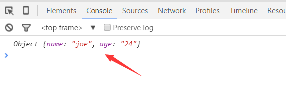
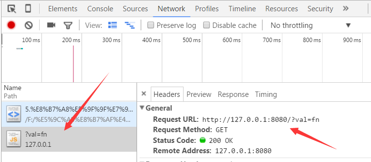

跨域
- 什么是跨域：在当前页面内，访问的请求与当前宿主域名的基本结构不同（方案、域名、端口），那么这个请求就是跨域请求。
- 同源策略：同域策略是浏览器厂商为了安全，强制实施的一种安全限制，简单地理解就是因为JavaScript同源策略的限制，a.com 域名下的js无法操作b.com或是c.a.com域名下的对象。 JSONP
JSONP(JSON with Padding)是JSON的一种“使用模式”，可用于解决主流浏览器的跨域数据访问的问题。
- 如何实现跨域：HTML的
<script>是一个开源策略，通过它网页可以得到从其他来源动态产生的 JSON 资料，而这种使用模式就是所谓的 JSONP。 - 注意：用JSONP 抓到的数据并不是 JSON，而是任意的JavaScript脚本。
- 执行步骤：
- 必须提前全局定义一个函数fn，用来操作获取到JSONP返回的javaScript脚本
- 把fn和server定义好的参数名(参数名一般是cb、callback、jsonpcallback)一起拼接到url的后面，eg:
www.baidu.com?fn=cb - server返回fn
- 浏览器收到数据之后，就开始把数据当成js来执行，也就是执行fn方法
JSONP简单的demo
介绍完几个定义，现在可以来演示一个简单demo了。
首先我们必须先自己一个后台服务，用什么写呢？肯定是nodejs，nodejs可谓前端一大神器，关于nodejs介绍我会在后续进行更新，如果现在你不懂什么nodejs，那么这个demo看看就可以，可以阅读我另一篇文章 JSONP实现百度栏搜索功能。
- 服务器代码：
/*server.js*/ var http = require('http'); var url = require('url'); var path = require('path'); var server = http.createServer(function(request, response){ var urlObj = url.parse(request.url, true); /*得到用户自定义的函数变量*/ var val = urlObj.query.val; /*模拟数据*/ var json = JSON.stringify({'name': 'joe', 'age': '24'}); /*返回javascript数据*/ response.end(val + '(' + json + ')'); }); /*开启后台服务：localhost:8080*/ server.listen(8080, function() { console.log('start'); }) - 前台HTML文件
/*JSONP_demo.html*/ <!DOCTYPE html> <html> <head lang="en"> <meta charset="UTF-8"> <title>JSONP</title> <style> </style> </head> <body> <script type="text/javascript"> /*定义全局函数fn，用于执行JSONP的返回的javascript脚本*/ function fn(data){ console.log(data); //打印后台传来的数据 } </script> /*发起跨域请求*/ <script src="http://127.0.0.1:8080?val=fn"></script> </body> </html> - 执行步骤
- 在命令行运行：
node server.js，就可以启动我们的后台服务 - 在chrome打开JSONP_demo.html文件
- 在命令行运行：
观察现象
我们可以在chrome的控制台观察到
控制台如我们所愿执行了fn函数，并打印出后台返回的数据。
为什么会执行执行fn函数？
本地页面通过script发起跨域请求，如下图所示：
服务器器接受到请求，并返回数据，如下图所示：

如上图，我们可以看到fn为什么会执行了，因为服务器返回了
fn({"name":"joe","age":"24"})脚本，而fn又是我们本地定义的一个全局函数，因此浏览器便会执行这个函数了。